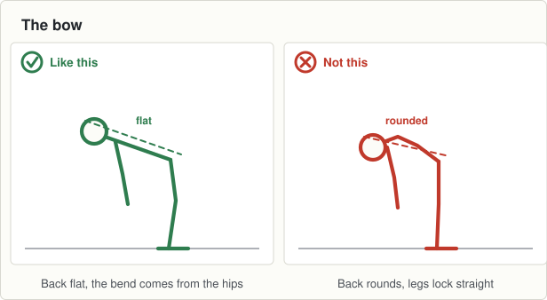

On the ground
- 18 cones: six lanes, stop line at 10 metres, 5 metres of run off
- 25 discs
- A ball each
Set it up before the first group arrives and leave it for all three.

0 to 2Wake up game: red, blue, green
- The same as traffic lights with one call added.
- "Green" is run forward, "red" is stop dead, "blue" is run backwards until the next call.
- Ten calls. Blue is the one they will get wrong, so use it early and often.
2 to 8Movement: stopping with a ball
- Six waves, jogging in and stopping on the line in two steps, ball in hand.
- Then four waves at match pace.
- The ball changes nothing about the stop. If it does, he was not solid to begin with.
8 to 13Body shape: the bow
- A disc each. Ten slow ones, five seconds held at the bottom of each.
- Then five with a partner watching from the side and calling flat or round.
- Say the four lines again for anyone who missed Tuesday.

13 to 17Finish: three stops each
- Three waves at match pace and that is the night.
- Walk them in and ask two boys to name the shape.
- Hand them on. They should leave fresher than they arrived.
Coach one thing: Nothing. Watch the boys who stopped upright on Tuesday.
- A boy who now sinks into the stop without being told. Tell him you saw it.
Lashing rain. Move the stop line in a metre and keep it at jogging pace.